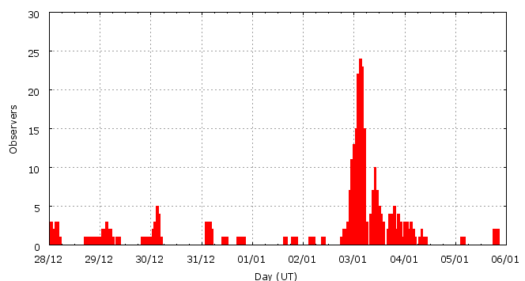

This page shows automated results of the Quadrantids 2009, based on visual data entered through the IMO electronic report form. Note that these automated results may not be suitable for scientific use; please refer to manual analysis results published in journal papers (e.g., WGN) when available. Send your feedback regarding this page to Geert Barentsen.
Page generated: 2009 April 18 at 16:45 UT.
ZHRmax = 146 based on 4676 Quadrantids in 586 data intervals, assuming fixed population index r = 2.1 and zenith correction 1/sin(hR).

| Time (UT) | Solarlon | nINT | nQUA | ZHR | |
|---|---|---|---|---|---|
| 2008-12-28 06:07 | 276.759 | 29 | 8 | 1 | ±0 |
| 2008-12-29 08:18 | 277.872 | 17 | 10 | 2 | ±1 |
| 2008-12-30 03:39 | 278.694 | 18 | 9 | 1 | ±0 |
| 2008-12-31 07:40 | 279.884 | 19 | 15 | 3 | ±1 |
| 2009-01-02 00:10 | 281.604 | 6 | 23 | 15 | ±3 |
| 2009-01-02 21:31 | 282.511 | 15 | 30 | 24 | ±4 |
| 2009-01-02 23:49 | 282.608 | 18 | 77 | 33 | ±4 |
| 2009-01-03 00:54 | 282.655 | 32 | 170 | 42 | ±3 |
| 2009-01-03 01:57 | 282.699 | 46 | 296 | 48 | ±3 |
| 2009-01-03 02:55 | 282.740 | 77 | 656 | 63 | ±2 |
| 2009-01-03 03:57 | 282.784 | 64 | 745 | 79 | ±3 |
| 2009-01-03 04:51 | 282.822 | 61 | 830 | 100 | ±3 |
| 2009-01-03 05:42 | 282.859 | 15 | 210 | 105 | ±7 |
| 2009-01-03 09:04 | 283.002 | 14 | 133 | 124 | ±11 |
| 2009-01-03 10:06 | 283.045 | 34 | 356 | 138 | ±7 |
| 2009-01-03 11:01 | 283.085 | 16 | 195 | 141 | ±10 |
| 2009-01-03 12:05 | 283.130 | 20 | 272 | 128 | ±8 |
| 2009-01-03 13:02 | 283.170 | 21 | 268 | 146 | ±9 |
| 2009-01-03 13:56 | 283.208 | 9 | 118 | 116 | ±11 |
| 2009-01-03 17:19 | 283.352 | 6 | 52 | 113 | ±16 |
| 2009-01-03 18:20 | 283.395 | 7 | 41 | 66 | ±10 |
| 2009-01-03 19:25 | 283.441 | 7 | 61 | 91 | ±12 |
| 2009-01-03 21:37 | 283.535 | 11 | 36 | 63 | ±10 |
| 2009-01-04 00:50 | 283.671 | 5 | 37 | 26 | ±4 |
| 2009-01-04 04:52 | 283.843 | 14 | 24 | 5 | ±1 |
| 2009-01-05 10:16 | 285.091 | 5 | 4 | 6 | ±3 |
For each estimation interval: time is the middle of the interval, nINT is the number of observing periods and nQUA is the number of Quadrantids involved. ZHR = (1 + sum nQUA) / sum(Teff/C) where Teff is the effective observing time and C is the total correction for limiting magnitude, clouds and zenith correction. The solar longitudes refer to equinox J2000.0.
ZHRmax = 161 based on 4454 Quadrantids in 444 data intervals, assuming fixed population index r = 2.1 and zenith correction 1/sin(hR).

| Time (UT) | Solarlon | nINT | nQUA | ZHR | |
|---|---|---|---|---|---|
| 2009-01-03 00:20 | 282.630 | 8 | 44 | 40 | ±6 |
| 2009-01-03 00:40 | 282.645 | 8 | 42 | 51 | ±8 |
| 2009-01-03 00:55 | 282.656 | 8 | 44 | 42 | ±6 |
| 2009-01-03 01:08 | 282.665 | 9 | 44 | 44 | ±7 |
| 2009-01-03 01:28 | 282.679 | 9 | 42 | 43 | ±7 |
| 2009-01-03 01:42 | 282.688 | 9 | 62 | 49 | ±6 |
| 2009-01-03 01:58 | 282.700 | 16 | 103 | 52 | ±5 |
| 2009-01-03 02:13 | 282.711 | 11 | 77 | 46 | ±5 |
| 2009-01-03 02:28 | 282.721 | 18 | 136 | 60 | ±5 |
| 2009-01-03 02:42 | 282.731 | 17 | 145 | 58 | ±5 |
| 2009-01-03 02:57 | 282.742 | 19 | 169 | 67 | ±5 |
| 2009-01-03 03:11 | 282.752 | 18 | 142 | 59 | ±5 |
| 2009-01-03 03:25 | 282.762 | 17 | 168 | 70 | ±5 |
| 2009-01-03 03:41 | 282.773 | 15 | 152 | 80 | ±6 |
| 2009-01-03 03:56 | 282.784 | 17 | 200 | 75 | ±5 |
| 2009-01-03 04:13 | 282.795 | 16 | 177 | 77 | ±6 |
| 2009-01-03 04:27 | 282.805 | 22 | 273 | 95 | ±6 |
| 2009-01-03 04:41 | 282.815 | 18 | 254 | 101 | ±6 |
| 2009-01-03 04:55 | 282.825 | 12 | 154 | 95 | ±8 |
| 2009-01-03 05:12 | 282.837 | 12 | 202 | 114 | ±8 |
| 2009-01-03 05:27 | 282.848 | 10 | 146 | 105 | ±9 |
| 2009-01-03 05:41 | 282.858 | 6 | 83 | 114 | ±12 |
| 2009-01-03 05:56 | 282.868 | 4 | 63 | 105 | ±13 |
| 2009-01-03 08:47 | 282.989 | 5 | 48 | 104 | ±15 |
| 2009-01-03 09:09 | 283.005 | 6 | 52 | 154 | ±21 |
| 2009-01-03 09:29 | 283.019 | 5 | 53 | 131 | ±18 |
| 2009-01-03 09:44 | 283.030 | 6 | 65 | 137 | ±17 |
| 2009-01-03 09:58 | 283.040 | 8 | 69 | 118 | ±14 |
| 2009-01-03 10:15 | 283.051 | 11 | 146 | 157 | ±13 |
| 2009-01-03 10:31 | 283.063 | 9 | 76 | 147 | ±17 |
| 2009-01-03 10:49 | 283.076 | 6 | 80 | 142 | ±16 |
| 2009-01-03 11:06 | 283.088 | 3 | 52 | 150 | ±21 |
| 2009-01-03 11:23 | 283.100 | 5 | 43 | 122 | ±18 |
| 2009-01-03 11:43 | 283.114 | 5 | 73 | 104 | ±12 |
| 2009-01-03 11:58 | 283.125 | 5 | 72 | 154 | ±18 |
| 2009-01-03 12:14 | 283.136 | 6 | 86 | 127 | ±14 |
| 2009-01-03 12:29 | 283.146 | 4 | 41 | 161 | ±25 |
| 2009-01-03 12:43 | 283.157 | 7 | 86 | 143 | ±15 |
| 2009-01-03 12:57 | 283.166 | 5 | 83 | 158 | ±17 |
| 2009-01-03 13:13 | 283.178 | 6 | 75 | 159 | ±18 |
| 2009-01-03 13:34 | 283.192 | 5 | 44 | 108 | ±16 |
| 2009-01-03 13:56 | 283.208 | 5 | 75 | 108 | ±12 |
| 2009-01-03 15:36 | 283.279 | 4 | 43 | 136 | ±21 |
| 2009-01-03 17:38 | 283.365 | 6 | 44 | 111 | ±17 |
| 2009-01-03 18:34 | 283.405 | 6 | 44 | 75 | ±11 |
| 2009-01-03 19:25 | 283.441 | 5 | 42 | 78 | ±12 |
| 2009-01-03 21:28 | 283.528 | 12 | 40 | 65 | ±10 |
For each estimation interval: time is the middle of the interval, nINT is the number of observing periods and nQUA is the number of Quadrantids involved. ZHR = (1 + sum nQUA) / sum(Teff/C) where Teff is the effective observing time and C is the total correction for limiting magnitude, clouds and zenith correction. The solar longitudes refer to equinox J2000.0.
Data has been received from 61 observers in 21 countries. Thank you for your efforts!

| Observer | Country | Teff | nQUA |
|---|---|---|---|
| Salvador Aguirre | Mexico | 5.50h | 197 |
| Mina Alizadeh | Iran | 0.96h | 4 |
| Karl Antier | France | 1.10h | 1 |
| Rainer Arlt | Germany | 1.53h | 98 |
| Pierre Bader | Germany | 4.43h | 107 |
| János Bakos | Hungary | 2.00h | 103 |
| Stephen Bedingfield | Canada | 2.68h | 119 |
| José Cappelletto | Venezuela | 0.45h | 7 |
| Simiao Cheng | China | 2.36h | 5 |
| Andrew Clarke | United Kingdom | 1.75h | 2 |
| Tibor Csorgei | Slovakia | 2.00h | 50 |
| Peter Detterline | United States | 1.60h | 21 |
| Sietse Dijkstra | Netherlands | 3.39h | 18 |
| Dariusz Dorosz | Poland | 1.64h | 73 |
| Frank Enzlein | Germany | 4.33h | 122 |
| Balazs Fodor | Hungary | 2.00h | 42 |
| Stela Frencheva | Bulgaria | 1.75h | 151 |
| William Godley | United States | 1.25h | 4 |
| Mitja Govedic | Slovenia | 1.91h | 9 |
| Shy Halatzi | Israel | 3.84h | 122 |
| Wayne T. Hally | United States | 4.00h | 81 |
| Vilem Heblik | Czech Republic | 4.25h | 57 |
| Carl Hergenrother | United States | 1.53h | 82 |
| Ken Hodonsky | United States | 2.70h | 86 |
| Kamil Hornoch | Czech Republic | 3.51h | 184 |
| Antal Igaz | Hungary | 3.16h | 123 |
| Carl Johannink | Netherlands | 8.44h | 172 |
| Javor Kac | Slovenia | 3.81h | 17 |
| Al?b?ta Kadlecová | Czech Republic | 3.58h | 62 |
| Katsuyuki Kobayashi | Japan | 0.50h | 5 |
| Jakub Koukal | Czech Republic | 34.42h | 268 |
| Jens Lacorne | France | 1.82h | 1 |
| Marco Langbroek | Netherlands | 3.45h | 323 |
| Peter Van Leuteren | Netherlands | 6.26h | 3 |
| Anna S. Levina | Israel | 3.57h | 115 |
| Jer Nan Lou | Taiwan | 2.18h | 7 |
| Pierre Martin | Canada | 2.25h | 197 |
| Bruce Mccurdy | Canada | 3.52h | 135 |
| Mukul Mhaskey | India | 2.41h | 20 |
| Koen Miskotte | Netherlands | 4.36h | 166 |
| Sirko Molau | Germany | 1.03h | 48 |
| Thomas Rattei | Germany | 1.17h | 61 |
| Jurgen Rendtel | Germany | 13.38h | 177 |
| Anna Rieth | Hungary | 1.50h | 18 |
| Mikiya Sato | Japan | 0.42h | 6 |
| David Scanlan | United Kingdom | 2.75h | 6 |
| Alex Scholten | Netherlands | 0.93h | 40 |
| Hideki Seo | Japan | 0.50h | 15 |
| Andrzej Skoczewski | Poland | 1.00h | 12 |
| Ulrich Sperberg | Germany | 4.76h | 51 |
| Wesley Stone | United States | 2.63h | 289 |
| Agoston Szauer | Hungary | 2.00h | 41 |
| Richard Taibi | United States | 1.85h | 79 |
| István Tepliczky | Hungary | 1.50h | 30 |
| Kazumi Terakubo | Japan | 0.75h | 15 |
| Rushikesh Tilak | India | 1.00h | 11 |
| Vesa Tornqvist | Finland | 2.92h | 96 |
| Shigeo Uchiyama | Japan | 3.00h | 85 |
| Michel Vandeputte | Belgium | 12.17h | 182 |
| Jan Verfl | Czech Republic | 3.57h | 68 |
| E. Brett Waller | United States | 1.00h | 65 |
Create your own analysis!
Rate intervals: qua2009_rate.csv (CSV-format).
Magnitude distributions: qua2009_magn.csv (CSV-format).